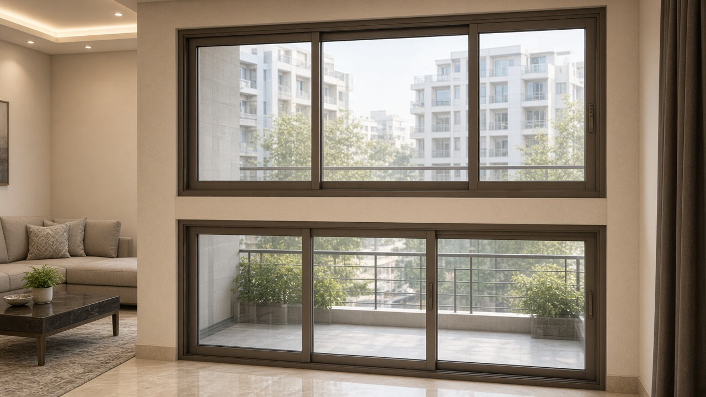

System Aluminium
Why slim aluminium sliders suit large openings

System Aluminium is not old box-section aluminium. The profiles are slimmer, the rollers take more weight, and the powder coat can match your elevation.
Use it when a living-room or balcony opening is too wide for a comfortable uPVC slider, or when the architect has drawn thin frames and more glass.
Ask about track type, number of panels, locking, and whether you need a mosquito mesh panel on the same system. A cheap thin section will rack and jam once the glass is in.
Fortune Windoors fabricates System Aluminium sliding doors and windows to site size from our Vidyaranyapura shop.